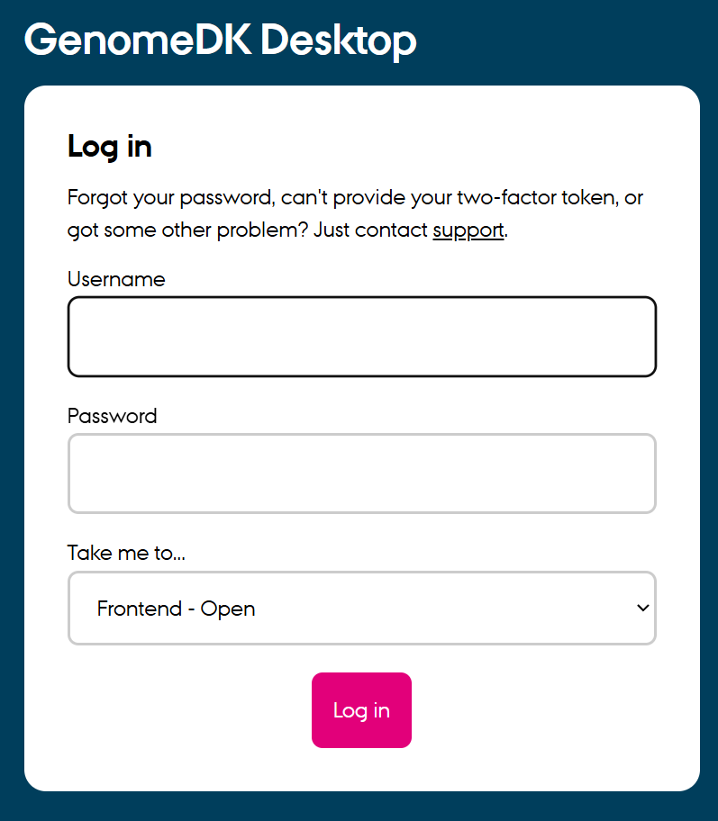
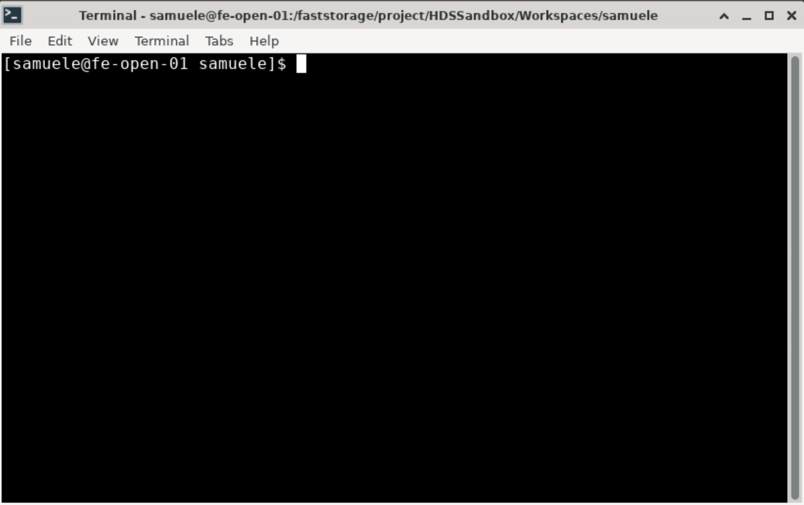

ABC.15: bulkRNA analysis on genomeDK
Slides
Today’s slides with topic presentation for bulkRNA analysis.
Tutorial
This tutorial is extracted from the NGS summer school at Aarhus University and adapted to create your own software environment on genomeDK.
We’ve had a tutorial on data analysis of bulk RNA seq data with the DESeq2. But now that we have introduced GenomeDK with our workshop, we are ready for the steps prior to differential expression analysis of count matrices. We’re ready for alignment and quality control (QC).
Apart from this tutorial, we suggest these useful resources: - https://github.com/erilu/bulk-rnaseq-analysis, - https://github.com/griffithlab/rnaseq_tutorial/wiki/RNAseq-Data, - https://github.com/quadbio/RNAseq_tutorial/blob/main/Tutorial.md,
- create your own environment on genomeDK
- work on fastQC data
- run an alignment with STAR
How to create the software environment on genomeDK
You can create an environment either with conda or with pixi. We show how to do it with both tools, including the installation guide.
With pixi on the cluster
Please use the command line on the virtual desktop. Log into the virtual desktop by filling in name and password for GenomeDK at the webpage desktop.genome.au.dk.

Then, use the file browser (red circle) to navigate into a project folder where you want to work. Create an empty folder for the tutorial called ABC15 and open it. You can create a folder with the right-click menu (green circle).

Once you are in the new folder, use the right-click menu to create an empty document. Rename it pixi.toml, open it, and paste the code block below. Save the file and close it.
If you want to copy and paste from and to the virtual desktop, you need to click on SHOW CLIPBOARD in the top right corner of the desktop. This will allow you to copy and paste between your local computer and the virtual desktop.
You can hide the clipboard window again by clicking on the same button.
[project]
authors = ["Yourself <hello@mymail.com>"]
channels = ["conda-forge", "bioconda"]
name = "ABC15"
platforms = ["linux-64"]
version = "0.1.0"
[tasks]
[dependencies]
samtools = ">=1.21,<2"
gffread = ">=0.12.7,<0.13"
fastqc = ">=0.12.1,<0.13"
multiqc = ">=1.28,<2"
star = ">=2.7.11b,<3"
igv = ">=2.19.2,<3"
r-base = ">=4.4.3,<4.5"
bioconductor-deseq2 = ">=1.46.0,<2"Use the right-click menu again and choose Open terminal here. A terminal already logged into GenomeDK will open.

If you do not have pixi installed, follow the few steps in the hidden box below, otherwise skip to the next steps.
Run the installation script to install the software. There are some informative messages during the installation.
curl -fsSL https://pixi.sh/install.sh | bashWhen you are done, you need a little bit of configuration. You can run the following command to configure pixi (run them only once, they are not needed again):
echo PATH="$PATH:$HOME/.pixi/bin" >> ~/.bashrc
echo 'eval "$(pixi completion --shell bash)"' >> ~/.bashrc
source ~/.bashrcNow you are ready to move on in the tutorial!
In the terminal, start a new interactive job with a command like the one below
srun --mem=16g --cores=2 --time=01:00:00 --account=PROJECT --pty pixi installChoose the amount of memory, cores and hours of usage you need. You also need a project name to write instead of --account=PROJECT. You need to have already a project on GenomeDK. This should install all the packages giving pixi plenty of installation resources.
With conda on the cluster
Repeat all the steps described above until the creation of the pixi.toml file. Instead, create a environment.yml file with the following content:
channels:
- conda-forge
- bioconda
dependencies:
- jupyterlab >=4.3.5,<5
- samtools = ">=1.21,<2"
- gffread = ">=0.12.7,<0.13"
- fastqc = ">=0.12.1,<0.13"
- multiqc = ">=1.28,<2"
- star = ">=2.7.11b,<3"
- igv = ">=2.19.2,<3"
- r-base = ">=4.4.3,<4.5"
- bioconductor-deseq2 = ">=1.46.0,<2"Use the right-click menu again and choose Open terminal here. A terminal already logged into GenomeDK will open.
If you do not have conda installed, follow the few steps in the hidden box below, otherwise skip to the next steps.
Run the installation script to install the software. There are some informative messages during the installation. You might need to say yes a few times
wget https://github.com/conda-forge/miniforge/releases/latest/download/Miniforge3-Linux-x86_64.sh -O miniforge.sh
chmod +x miniforge.sh
bash miniforge.sh -b
~/miniforge3/bin/conda init bash
source ~/.bashrcWhen you are done, you need a little bit of configuration. You can run the following command to configure conda (run them only once, they are not needed again):
conda config --append channels conda-forge
conda config --append channels bioconda
conda config --set channel_priority strict
conda config --set auto_activate_base false
source ~/.bashrcFinally, install a package to accellerate conda. This is optional but recommended:
conda install -n base --yes conda-libmamba-solver
conda config --set solver libmambaNow you are ready to move on in the tutorial!
In the terminal, create a new conda named ABC15 environment with the command below. Be patient because it takes some minutes:
conda env create -f environment.yml -n ABC15Data download
Keep using the terminal you opened before in the folder ABC15.
The data can be downloaded from a zenodo repository using wget as it follows:
wget https://zenodo.org/records/13342414/files/clover.tar.gz?download=1 -O clover.tar.gzand then must be decompressed
tar -xvf clover.tar.gzNow, if you look with the file browser inside your tutorial folder, you should have a folder called Clover_Data with some files inside.
About the data
The folder contains example data from Illumina RNA sequencing of white clover, Trifolium Repens. This clover data is peculiar in that we’re working with an allotetraploid organism, meaning that it contains genomes originating from two different species in the same nucleus. You can read more about the white clover in this blog and in the paper sequencing its genome (Griffiths et al, 2019).
The data consists of short reads (50-300 bp), and for their alignment we need both a reference genome in fasta format (.fa or .fasta) and an annotation file (often .gtf or .gff).
In this example we use 4 libraries of S10 from the data folder. The libraries are paired-end reads, which is reflected by R1 and R2 inside their names (S10_1_1.R1.fastq, S10_1_1.R2.fastq, S10_1_2.R1.fastq, S10_1_2.R2.fastq). Each of the pairs will be aligned separately and merged to create one final sample afterwards.
A lot of the time, we will be working with organisms where their reference genome can be found on Ensembl. Here, the reference and annotation are already provided in the data folder (in a reduced version), but could be downloaded entirely from NCBI.
Quality control of the reads (fastq files)
Start an interactive job on the cluster. You need very few resources to make this tutorial work:
srun --mem=16g --cores=2 --time=02:00:00 --account=PROJECT --pty /bin/bashand activate your environment with conda or pixi, sing one of the two commands below:
conda activate ABC15or
pixi shell ABC15First, we run fastqc on all the libraries In the Clover_Data directory:
mkdir -p fastqc_output
fastqc -q -o fastqc_output/ ./Clover_Data/S10*.fastq > /dev/null 2>&1fastqc creates some nice webpages with all the quality reports inside. To put all those reports together into one overall report, we use multiqc.
multiqc --outdir ./multiqc_output ./fastqc_outputNow, use the file browser to open the file multiqc_output/multiqc_report.html. Ignore the fact that Per base sequence quality is bad for all libraries. This happens because RNA‐seq libraries often use random priming, and early bases can show a biased composition that does not reflect true sequencing quality.
Why do all libraries show a high rate of duplication in the quality report?
Note that we also have a bad Per-tile sequencing quality. “Per-tile” sequence quality checks for uneven or low-quality reads on specific tiles (physical subdivisions) of the flow cell. The bad quality of this check is due to the fact that the sequencer has a hard time reading the tiles in the middle of the flow cell. This is not a problem, as long as the overall quality is good.
Alignment
Now, we have established that our data looks fine enough. We can proceed with the alignment of the reads to the reference genome.
We will align our raw data to the reference genome using the STAR aligner. STAR is a good choice for aligning RNA-seq data to a reference genome, as it is designed to handle the spliced alignments of RNA-seq reads. Other well-known aligners are Bowtie2 and minimap2.
First of all we need to convert the reference gene coordinate file (gff format) into the correct format for STAR (gtf format). This is done with the following command:
gffread -T -o ./Clover_Data/white_clover_genes.gtf ./Clover_Data/white_clover_genes.gffNow, you should have a gtf file in your data folder.
We need to index the reference genome file using the --runMode genomeGenerate argument, because alignment tools like STAR use an indexed representation of the genome to perform efficient read mapping.
STAR --runThreadN 8 --runMode genomeGenerate \
--genomeDir STAR_output/indexing_contigs_1_2 \
--genomeFastaFiles Clover_Data/DNA_Contig1_2.fasta
--sjdbGTFfile Clover_Data/white_clover_genes.gtf
--genomeSAindexNbases 9The command above has a looot of possible options. But how do you know you have to write those? And which values do you need to put there?
There is no magic behind this. The answer is always: read the manual. You can find the manual for STAR here. Open it and look at the chapter 1.2 for the basic workflow. There it will explain exactly what we have done, with the options and their meaning!
Now, we align all of the S10 libraries of the white clover data. We use a for loop to iterate over the libraries and align them to the reference genome.
for i in `ls Clover_Data/S10*.R1.fastq`
do
PREFIXNAME=`basename $i .R1.fastq`
echo "##### ALIGNING PAIRED-END READS "$PREFIXNAME
STAR --genomeDir STAR_output/indexing_contigs_1_2/ \
--runThreadN 8 \
--runMode alignReads \
--readFilesIn ./Clover_Data/$PREFIXNAME.R1.fastq ./Clover_Data/$PREFIXNAME.R2.fastq \
--outFileNamePrefix ./STAR_output/S10_align_contigs_1_2/$PREFIXNAME \
--outSAMtype BAM SortedByCoordinate \
--outSAMattributes Standard \
--quantMode GeneCounts \
--alignIntronMax 5000
doneIn the STAR_output folder, you should now have a S10_align_contings_1_2 folder containing the aligned reads in bam format, already sorted by genomics coordinates. The STAR aligner can also generate an expression matrix directly during the alignment step by using the --quantMode GeneCounts option, which we already included in the alignment command above. This option instructs STAR to count the number of reads mapped to each gene based on the provided annotation file.
Also, the gene counts will be saved in a file named ReadsPerGene.out.tab for each library in the output directory (./STAR_output/S10_align_contigs_1_2/). These files contain the raw counts for each gene, which can be directly imported into R for downstream analysis with tools like DESeq2.
Now, in your terminal write R and press enter. You should be able to use the R language. We find all the file names of the .tab files with the following command and merge all the tables by column.
samples <- sort(system("find STAR_output/*_align_contigs_1_2 -name \"*ReadsPerGene.out.tab\"", intern=TRUE))
print(samples)
Read_counts <- do.call(cbind, lapply(samples, function(x) read.delim(file=x, header = FALSE)))You should see six names printed out leading to the tabular files. Now, the table is such that it has one column with text, and then three columns with numbers. The numbers are Unstranded read counts, Stranded read counts (strand-specific forward), and Stranded read counts (strand-specific reverse). We need only column 2 with unstranded read counts. So we only take columns 2, 6, 10, 14, 18, and 22. This is what is done in the slightly cryptical R code below.
rownames(Read_counts) <- Read_counts[,1]
N <- dim(Read_counts)[2]
Read_counts <- Read_counts[c(5:nrow(Read_counts)), c(seq(2, N, by=4))]
colnames(Read_counts) <- c("S10_1_1", "S10_1_2", "S10_1_3", "S10_2_1", "S10_2_2", "S10_2_3")
head(Read_counts, n=10)
dim(Read_counts) # dimensions of the data frameNow, names are assigned for each library in the columns of the dataset. Let’s try to visualize it:
head(Read_counts, n=10)You should see something like below:
S10_1_1 S10_1_2 S10_1_3 S10_2_1 S10_2_2 S10_2_3
g175 143 226 227 217 206 193
g176 17 12 15 8 14 18
g177 0 0 0 0 0 0
g178 0 0 0 0 0 0
g179 0 0 0 0 0 0
g180 2773 5223 4350 4139 3209 4644
g181 473 679 583 437 390 450
g182 19 15 20 9 8 4
g183 0 0 0 0 0 0
g184 30 22 50 57 103 83Now, you have a dataset that can be used for analysis in DESEQ2. This is already installed, so feel free to try and use our DESEQ2 short tutorial as a guide.
License
This vignette is distributed under a CC BY-SA license license.